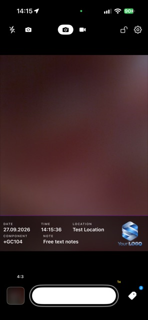
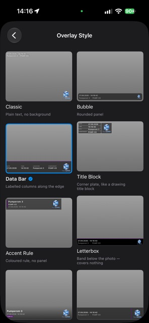
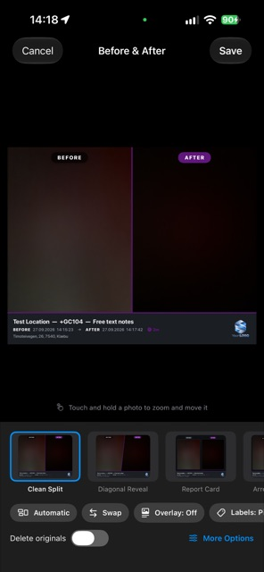

FieldCam
Photos and videos stamped with time, GPS and job tags the moment you shoot. No cloud account, no subscription, works fully offline.
User GuideSupport


Made for documentation work
FieldCam turns your iPhone into a documentation camera for site visits, inspections, repairs and service work. Every photo and video carries the date, time, GPS position and address, plus the tags and notes you attach, printed into the image so the record travels with the file.
- Time, GPS and addressStamped automatically, in an overlay style you choose, with your own logo.
- Tags and notesAdd component codes as you shoot, scan labels, and create numbered series such as GA101 to GA130. Call them tags, components or assets.
- Before & AfterTwo photos of the same job in one clean image. Name the sides as you like, for example Reference and Actual.
- Draw, crop and rotateArrows, boxes, circles and text on a photo, and crop or straighten without touching the original capture.
- PDF reportsPick pictures, add an explanation under each, and send one report. Choose paper size, logo and picture quality.
- Video toolsTime-lapse with an interval of your choice, and a stopwatch with laps printed into the video.
- Team TemplatesShare your camera and overlay setup with a QR code, so a whole crew documents the same way.
- Backup you controlCopy to your own iCloud Drive or a folder you choose. There is no FieldCam server.
Private by design
FieldCam has no user accounts, no analytics and no advertising. Your photos, videos and location stay on your device and in the backup destination you pick. Read the privacy policy.